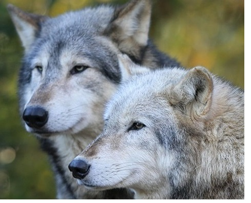
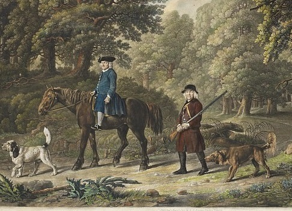
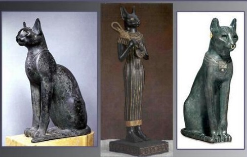

A pesar de que el origen del perro ha sido objeto de numerosas investigaciones, todavía nos quedan muchas preguntas por responder acerca de la historia del que sin duda es el animal doméstico por excelencia. Las aproximadamente 400 razas de perros muestran una enorme diversidad de formas y tamaños, hasta el punto de que el perro doméstico es el mamífero más diverso de cuantos existen. No es de extrañar, por lo tanto, que muchos científicos pensaran que el perro procede de más de una especie de cánido salvaje. Así, por ejemplo, Konrad Lorenz –uno de los científicos que recibió en Premio Nobel de Medicina y Fisiología por sus estudios sobre el comportamiento de los animales- propuso que algunas razas de perro, entre ellas las nórdicas, procedían del lobo y otras, la mayoría, del chacal. Los estudios genéticos, sin embargo, han demostrado que todas las razas de perro sin excepción proceden de un único antepasado salvaje: el lobo. En realidad, el lobo y el perro son tan similares que algunos autores han sugerido que deberían considerarse la misma especie. En cuanto a los gatos, su origen no es más claro que el de los perros, el miacis es el antecedente probable del gato y de los otros mamíferos carnívoros; el descendiente de estos, el cynodictis, se diferenció en Ailuroides y Machairodontinos durante el pleistoceno, y de ahí a todos los felinos actuales. El gato doméstico (F. catus) y los gatos salvajes (F. Sylvestris), posiblemente se originen de los gatos de Egipto, norte de África y de Europa Continental; en fin, los escritos sobre este tema más parecen leyendas que testimonios.
Las dos especies actualmente son conocidas como animales de compañía no son las únicas mascotas, pero sin duda, son las más numerosas y las de mayor difusión. Los perros y los gatos representan la relación interespecífica más común entre el hombre y los animales. Muchas generaciones de perros y gatos han vivido con el hombre y presentado variaciones o adaptaciones fisiológicas y de comportamiento.
Los Perros en la Antigüedad

Los perros han formado parte de la historia de la humanidad desde mucho tiempo antes de la palabra escrita. Hallazgos hallados en el antiguo templo de Gobekli Tepe, en Turquía, que datan de alrededor de 12.000 años a.C. han proporcionado a los arqueólogos la evidencia de la existencia de perros domesticados. Otra de las muestras que han puesto de relieve evidencias de domesticación canina en la antigüedad, es la Tumba de Natufian, que data de alrededor del 12.000 a.C., descubierta en Ein Mallaha, Israel, donde se hallaron los restos de un anciano enterrado con un cachorro. También aparecen referencias a perros domesticados en la historia escrita más antigua: La Epopeya de Gilgamesh, conocido como Istubar, el quinto rey de Uruk, un personaje legendario de la mitología sumeria escrita en tablillas cuneiformes que se remontan a la época de la antigua Sumeria, del 2.150 a 2.000 a.C., en la que se hace referencia a los siete perros de caza muy preciados que posee la diosa Innana, que está enamorada de él.
Los gatos en el antigüo Egipto

Los gatos formaron parte importante de la cultura del antiguo Egipto; ya fuera como una compañía del hogar o un objeto de adoración, estos animales tuvieron más dominio de los egipcios que cualquier otra criatura. Pero, ¿qué es lo que diferencia a los gatos de otros animales para que fueran tan importantes para esta cultura? Si bien los gatos que domesticamos no son descendientes directos de los leones, son felinos y los egipcios los asociaban con este animal grande y poderoso que con solo un rugido dominaba toda la manada. Los egipcios identificaban a los leones con la figura del sol que para ellos era muy importante porque su Dios principal, Dios del sol llamado Ra, moría con la caída del sol por el oeste y volvía a nacer con el amanecer en el este. Este Dios, sin embargo, siempre corría peligro durante la noche porque sus enemigos lo atacarían, y es allí donde entra la figura del león, cuyos ojos reflejan los rayos del sol y combaten la oscuridad protegiendo así al Dios Ra. Tal es así, que los gatos terminan siendo esos leones que con sus ojos combaten la oscuridad, llegando a ser los animales más sagrados en esta cultura, teniendo réplicas en templos y pirámides con el fin proteger a los dioses.